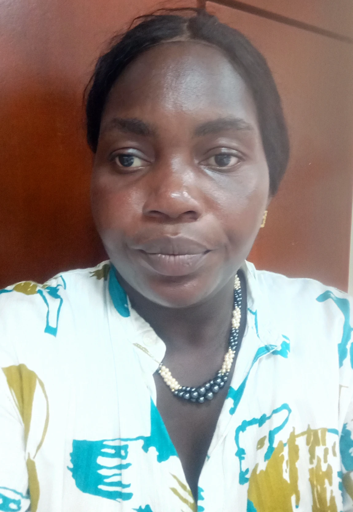

Home
About Me
My name is Kouassi Bienvenue Adjoua Felicite. I am marred with a man called Mabio so I am spouse Mabio I live in Ivory Coast with all my family. I have three wonderful daughters that i love much even thought they worry me sometimes. I like programming a lot but I have to manage my time beetween motherhood and study. I like singing and being with my family. And it is true that home is sweet when there is love. I hope to make the requierement of this courses and I know God will help me out
Student Photo
